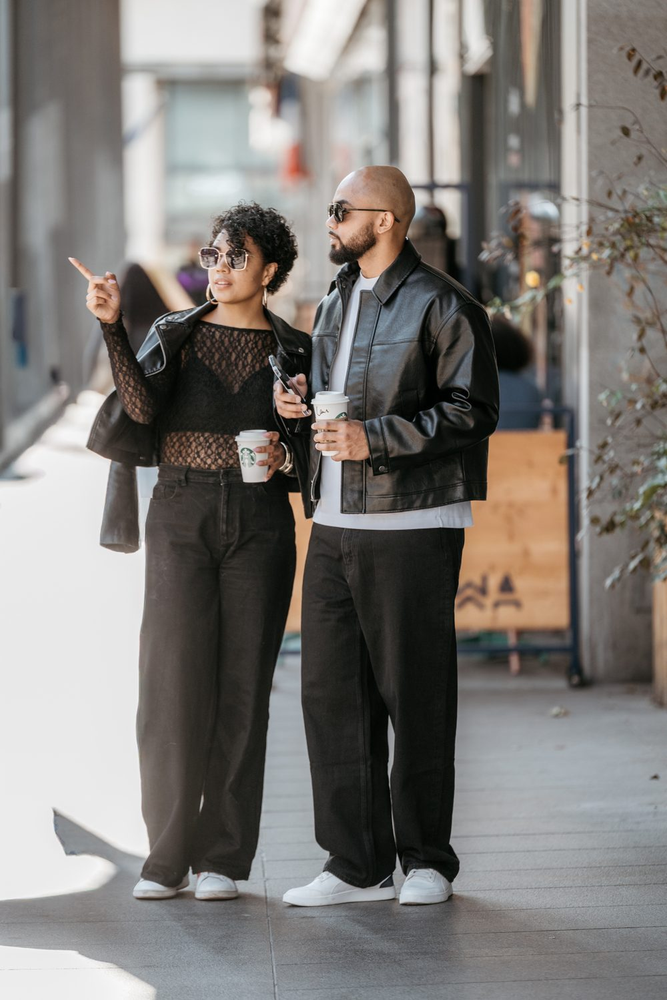

Dylan : le marketing
Positionnement unique, offre, tunnel de vente.
Résultat : plus de ventes.
Pour vendre plus, sans tout porter seul.
Dylan te fait vendre plus. Laura structure ton business pour qu'il tienne.
Sans tout porter seul.
Ali y parle de sa journée signature : 3 fois son chiffre d'affaires habituel d'une journée, en 45 minutes.
Les ventes, les clients, l'admin, les problèmes. Ton business tourne, mais il tourne grâce à toi, et tu n'en peux plus.
Positionnement unique, offre, tunnel de vente.
Résultat : plus de ventes.

Laura remet de l'ordre dans tout ce qui se passe derrière tes ventes, pour que ton business tienne sans que tu sois partout.
Résultat : un business qui tient sans que tu sois partout.
On travaille avec toi, dans ton business, dans l'opérationnel, pour maximiser tes résultats.
On ne fait pas grandir un business qui fuit. D'abord on répare, ensuite on accélère.
« On sait où tu en es et où on va. »
Durée : À compléter
Ta promesse, ton offre, ton prix, d'où viennent tes clients, comment tu vends.
Tes chiffres, ton équipe, qui fait quoi, où part ton temps.
Ce qui entre et ce qui sort, tes prospects, tes ventes, ce que te rapporte un client. Ils servent à mesurer tes progrès.
Les priorités, dans l'ordre, avec qui fait quoi et pour quand.
Ton diagnostic et ton plan d'action écrits.
« On répare ce qui te fait perdre des ventes et du temps. »
Durée : À compléter
Une promesse claire, une offre qui se vend, un prix juste, un tunnel de vente en place.
Tes chiffres en ordre, tes process écrits, tes informations rangées, les premières tâches confiées à d'autres.
Ton tunnel de vente qui tourne, tes process documentés, un tableau de bord simple de tes chiffres.
« On fait grandir ce qui marche. »
Durée : À compléter
Un nouveau canal pour trouver des clients, et plus de ventes avec tes clients actuels.
Recrutement, management de l'équipe, routines de pilotage. L'équipe prend le relais.
Le temps fort qui met en scène tout ce qu'on a construit ensemble.
Une croissance mesurée par rapport à tes chiffres de départ, une équipe qui avance sans que tu portes tout, et une journée signature que tu peux refaire chaque année.
C'est le temps des deux premières phases : l'embarquement et l'optimisation. Le développement se poursuit ensuite, au mois.
Une journée pensée pour ton business, qui fait tout en même temps : vendre, fidéliser, mobiliser.
Une fois tes bases en place, on organise avec toi ta journée signature. Un temps fort, à ton nom, qui réunit tes clients, ton équipe et ton offre au même moment.
On ne la fait pas au début. On la fait quand ton offre se vend, que ton tunnel tourne et que ton équipe sait ce qu'elle a à faire. Sinon, on mettrait en avant un business qui n'est pas prêt à recevoir.
3x son CA habituel d'une journée, en 45 min
Lors de sa journée signature, Ali a fait 3 fois son chiffre d'affaires habituel d'une journée, en 45 minutes.
Ali, À compléter (métier)
Écouter AliSi tu as un lieu physique : une journée dans ta boutique, ton restaurant ou tes locaux. Portes ouvertes, démonstrations, offre du jour.
Si tu vends en ligne : un live de lancement, un événement en visio ou une rencontre avec tes meilleurs clients, avec une offre ouverte seulement ce jour-là.
Avant.
On choisit l'objectif, on construit l'offre du jour, on prépare l'équipe et on fait monter l'attente auprès de tes clients.
Le jour J.
L'équipe sait qui fait quoi, tes clients vivent un moment à part, et l'offre est ouverte.
Après.
On relance ceux qui n'ont pas acheté, on remercie ceux qui l'ont fait, et on mesure les résultats.
Le chiffre d'affaires de la journée, le nombre de clients venus, les nouveaux contacts récupérés, et les clients qui reviennent dans les semaines suivantes.
Laura organise la journée : le lieu, le déroulé, l'équipe, la logistique.
Dylan construit l'offre du jour et la communication avant, pendant et après.
Une journée que tu peux refaire chaque année, avec son déroulé écrit.
L'offre réservée à la journée s'arrête vraiment à la fin de la journée.
Pas plus, parce qu'on travaille vraiment dans ton business.
Candidater pour un appel4 business lancés et 54 entreprises aidées, en physique et en ligne.
3x
son chiffre d'affaires habituel d'une journée, en 45 minutes, lors de sa journée signature.
À compléter (phrase d'Ali)
Ali, À compléter (métier)
À compléter
Résultat chiffré
À compléter (phrase du client)
À compléter (prénom, métier)
À compléter
Résultat chiffré
À compléter (phrase du client)
À compléter (prénom, métier)
À compléter Logos ou photos clients, avec leur accord.
Seuil d'accès : À compléter (chiffre d'affaires ou marge minimum)
tu n'as pas encore lancé ton activité. Commence par la formation gratuite.
Vendre plus, et plus cher. Les 5 bases du marketing, appliquées sur ton business.
À compléter · lien de la playlist YouTube
Sur YouTube, 7 semaines, un module par semaine. Gratuit, sans formulaire, sans page de vente.
À chaque étape, tu appliques sur ton business et tu envoies ton travail en DM sur Instagram. Chaque semaine, des cas sont corrigés en live.
Une heure offerte à ceux qui ont appliqué et qui restent bloqués, dans la limite de cinq personnes par mois.


En 2021, Dylan a travaillé avec un entrepreneur qui fait plusieurs millions. En un mois, il a fait ses premiers 10 000 € net.
Ce n'était pas de la magie : il a vu de l'intérieur que tout reposait sur des bases, toujours les mêmes. La première compétence qu'il a travaillée, c'est la vente. Depuis, il a lancé 4 business et aidé 54 entreprises.
Aujourd'hui, avec Laura, ils mettent ces bases au service de ton business.

Ça dépend de ton besoin. On te donne le prix exact pendant l'appel.
À compléter
On a aidé 54 entreprises, en physique et en ligne, dans des secteurs différents. L'appel sert justement à voir si on peut t'aider. Si ce n'est pas le cas, on te le dit.
3 mois minimum. C'est le temps qu'il faut pour faire le diagnostic, poser le plan et réparer ce qui te fait perdre des ventes et du temps. Ensuite, on continue au mois si tu veux faire grandir ce qui marche.
Un temps fort qu'on organise avec toi, une fois tes bases en place. Elle fait du chiffre, fidélise tes clients, mobilise ton équipe et profite de la force d'un lancement. Ali, par exemple, a fait 3 fois son chiffre d'affaires habituel d'une journée, en 45 minutes.
Oui. Elle prend la forme d'un live de lancement ou d'un événement en visio, avec une offre ouverte seulement ce jour-là.
À compléter
Parce qu'on travaille vraiment dans ton business. Au-delà, on ne pourrait pas le faire correctement.
Dylan te fait vendre plus. Laura structure ton business pour qu'il tienne.
On accompagne cinq entreprises à la fois.
Merci, ta candidature est envoyée.
Ta messagerie s'ouvre avec tes réponses : il te reste à appuyer sur « Envoyer ».
Et ensuite : À compléter
Tes réponses servent uniquement à préparer ton appel avec nous. Politique de confidentialité.